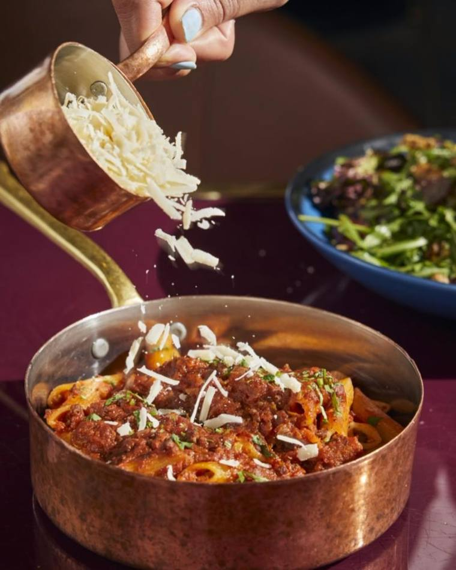
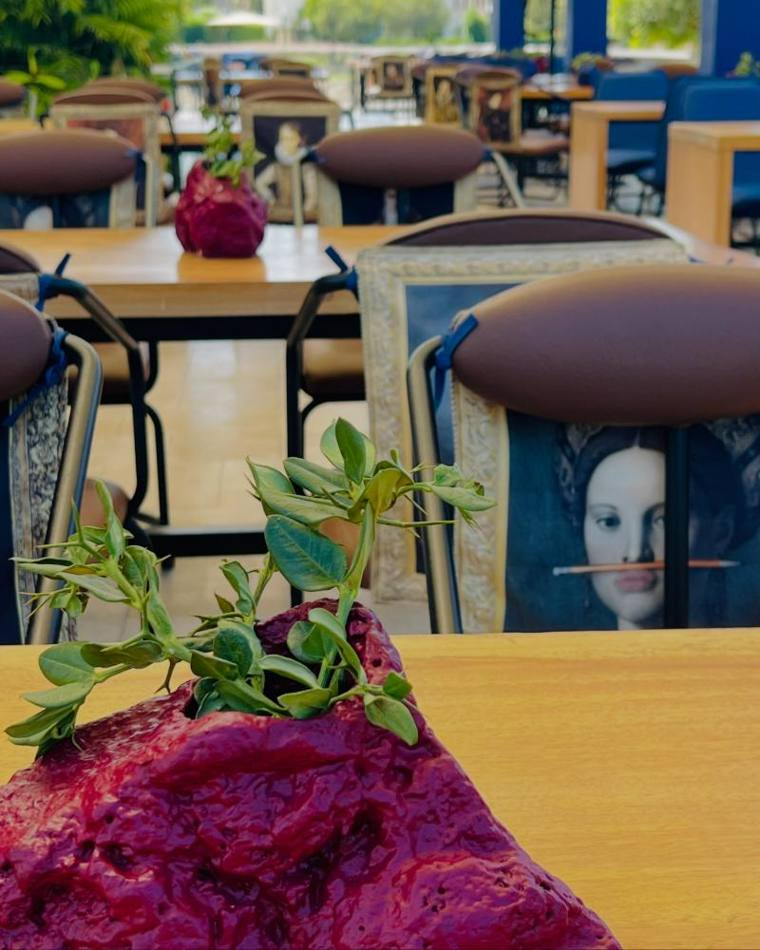

GALA
cosmopolitan cuisine
أكل من كل مطابخ العالم، في مكان معمول زي معرض فني
بيتزا نابوليتان بعجينة بنعملها بإيدينا، باستا طازة، ستيك، سوشي تاكو وأطباق آسيوية. من الفطار لحد آخر الليل في Walk of Cairo.
4.7 من 245 تقييم على Google
9 AM – 11:30 PMWalk of Cairo
زايد ومراسيوفروع تانية


المكان نفسه جزء من التجربة
كل ركن في GALA متصمم كأنه لوحة: كراسي عليها بورتريهات، فازات حمرا منحوتة، وألوان النبيتي والأزرق الكوبالت في كل تفصيلة. تصميم المعمارية Rana Chaar.
- فطار من الصبح، وغدا وعشا لحد بالليل
- قعدة جوا وبرا، مناسبة للعزومات والاحتفالات
- عجينة البيتزا والباستا بتتعمل في المطبخ
ضيوفنا بيقولوا ★★★★★
“Polite staff, beautiful aesthetic and good food!”
“The food was delicious. Definitely try the carrot and ginger soup.”
Walk of Cairo · الشيخ زايد
مبنى B07، محل G09، Walk of Cairo، طريق مصر إسكندرية الصحراوي
تليفون: 011 5818 8864
المواعيد في زايد
الأحد للأربع: 9 الصبح لـ 11:30 بالليل
الخميس للسبت: 9 الصبح لـ 12 بالليل
GALA Marassi
قدام بوابة 2، مراسي، الساحل الشمالي
تليفون: 010 4148 7195